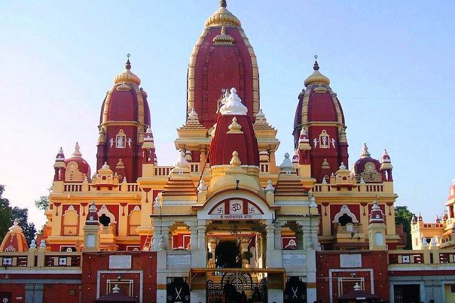

Laxmi Narayan Temple, also known as Birla Mandir, is one of Delhi's major temples and a major tourist attraction. Built by the industrialst Sh. J.K. Birla in 1939, this beautiful temple is located in the west of Connaught Place.
The temple is dedicated to Laxmi (the goddess of prosperity) and Narayana (The preserver). The temple was inaugurated by Mahatma Gandhi on the condition that people of all castes will be allowed to enter the temple.